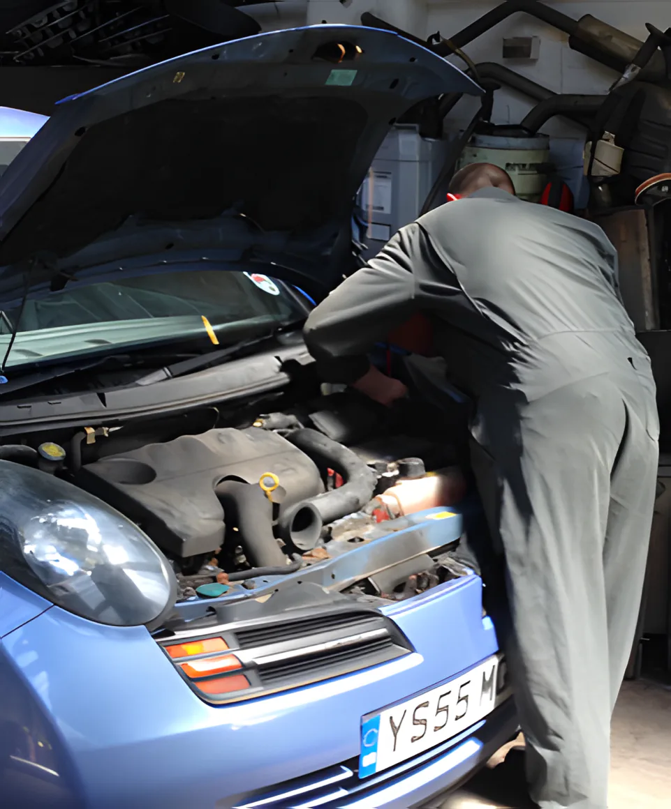
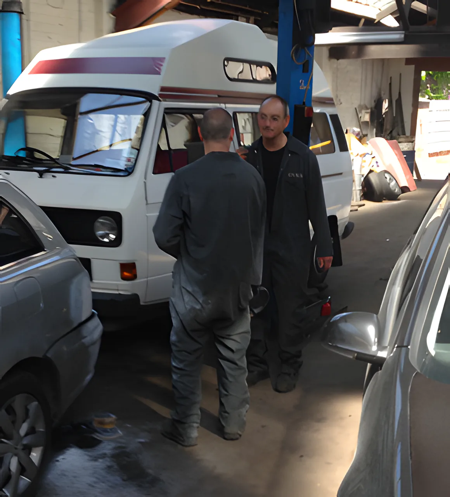
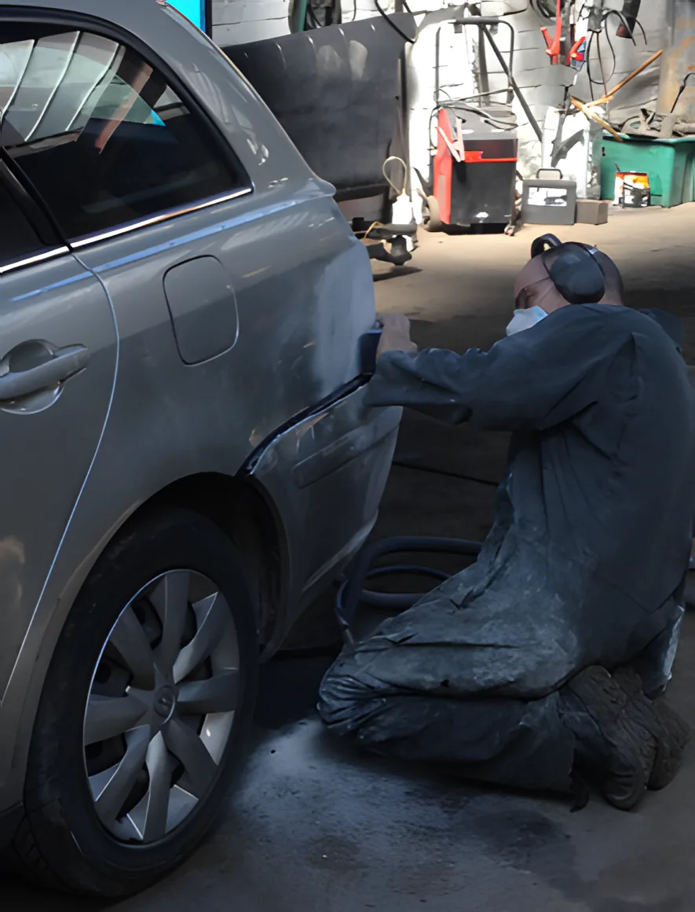

RussellGarage
Servicing, repairs, MOT preparation and body work for whatever make or model you drive. We've been fixing cars in Manchester since 1961.
31A Russell Road, Whalley Range, M16 8DJMon–Fri 8am–6pmOpen now

What we do
No job is too big or too small. Whether it's a locked wheel nut or a complete engine rebuild, you get the same service. Tap a line for the details.
01Servicing & repairsMajor and minor services on all makes and models, plus air-con repairs and re-gas.
Regular servicing keeps your car safe and reliable, and a fully stamped service book helps when you come to sell it. If a warning light comes on, bring it in: we use the latest diagnostics equipment for quick fault finding.
- Brakes and handbrake
- Clutch and gearbox
- ABS
- Air bags
- Engine management
- Air-con re-gas
02MOT preparationA test-level check before the MOT, and the repairs done quickly.
A failed MOT costs time and money. We test everything the MOT covers, and if we find a fault that would fail it, we fix it with your permission, to a higher standard than the test asks for.
- Brakes
- Engine
- Clutches and gearbox
- Steering and wheels
- Framework and seating
- Exhaust
- Mirrors and glass
- Horns and lighting
03Body work & re-spraysDents, bumps and scratches after an accident, and classic car restoration.
We repair body work damage, major and minor, so the car looks right again. Got a classic? We'll bring it back to showroom condition, and can fit modern parts while keeping the original look.
- Bumps
- Scratches
- Re-sprays
- Paintless dent removal
- Alloy refurbishment
- Framework
- Scuffed bumpers
- Chipped paintwork
04Brakes & clutchesPulling as you stop, or a screech? Ring us before it gets worse.
Brake repairs that won't break the bank, and clutches supplied and fitted. We recommend having brakes and clutch checked once a year: it can save an expensive repair later.
- Brake pads
- Discs
- Drums
- Hand brake
- Brake and clutch cylinder
- Slave cylinder
- Flywheel
- Clutches supplied and fitted
05ExhaustsSpluttering, banging or louder than usual: permanent repairs, not bandages.
Your exhaust carries the fumes away from you and your passengers. We repair the whole system properly, and fit sportier exhausts too.
- Cracked pipes
- Corrosion
- Catalytic converter
- Lambda sensor
- Exhaust manifold
- Silencer
06WeldingChassis and frame repairs so the car is safe and passes its MOT. Free quote.
Structural damage doesn't have to mean a write-off. From spot welding to large post-accident repairs, and all of it carries our no-quibble guarantee.
- Structural damage
- Frame repairs
- Floor panels
- Suspension mounts
- Chassis repairs
- Wheel arches
07Locking wheel nutsHard to shift, even with the right key? We have the tools to get them off.
Don't spend hours struggling with it. We remove locking nuts from all cars and light commercial vehicles, and our prices are lower than you might think.
- All cars
- Light commercial vehicles
08TyresRing us with your size and we'll sort them out.
Tyres are part of our everyday work alongside servicing and MOT preparation. Give us a ring with the size on the side of the tyre.
Since 1961
We've been servicing and repairing cars in Manchester since 1961. Most of our customers come back to us, again and again.
- 01We follow the Motor Industry Code of Practice.
- 02We're members of the Parts Alliance, so you can rely on the parts as well as the work.
- 03All our work carries a no-quibble guarantee.
- 04Whatever the job, we do it as quickly as we can. Being without your car is a pain.


Booking in
Ring or email
Call 0161 881 4466 or email info@russellgarage.co.uk. Tell us the make, the model and what it's doing. A photo of the warning light or the dent helps.
Bring it to Russell Road
Drop it at 31A Russell Road, Whalley Range, any weekday from 8am.
We find the fault
Our diagnostics equipment finds faults quickly. We tell you what it needs and give you a quote before we carry on.
Back on the road
We do repairs as quickly as we can, because being without your car is a real inconvenience.
Reviews
“Everyone, and I mean everyone, I know in Manchester that has a car uses these guys. Terry is a star, quick turnaround and no fear of unnecessary work.”
“Great local garage. Fit me in a week after I spoke to them and diagnosed the issue same day. Would highly recommend.”
“This is the most honest and reliable place I've been, efficient, affordable and trustworthy and I'll definitely come back.”
“Consistently excellent service, honest and reasonably priced.”
“I've had consistently positive experiences: trustworthy, reliable and helpful.”
Rating and reviews as shown on Google, November 2026.
Warning light on?
Bring it to us. We use the latest diagnostics equipment for quick fault finding. Ring for friendly advice or to book an appointment.
Find us
Open nowRussell Garage, 31A Russell Road, Whalley Range, Manchester M16 8DJ
Open weekdays, closed at the weekend. Ring ahead to book your car in.
| Monday | 8am – 6pm |
| Tuesday | 8am – 6pm |
| Wednesday | 8am – 6pm |
| Thursday | 8am – 6pm |
| Friday | 8am – 6pm |
| Saturday | Closed |
| Sunday | Closed |
Customers come to us from
- Manchester
- Salford
- Trafford
- Stockport
- Altrincham
- Sale
- Rusholme
- Cheadle